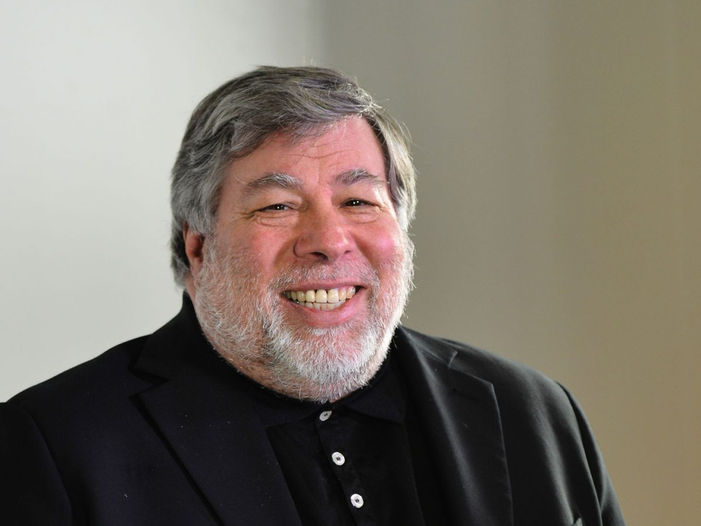
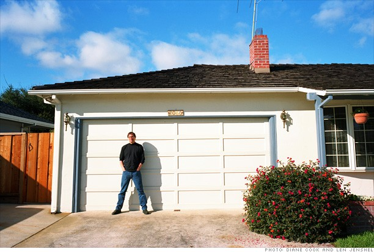

História de Steve Jobs
Steve Jobs (1955-2011) foi um empresário norte-americano, fundou a Apple. Criou o "Macintosh", o "iPod", o "iPhone" e o "iPad". A Apple revolucionou a indústria de computadores pessoais, os filmes de animação, o mundo da música e dos telefones celulares

Steve Paul Jobs (1955-2011) nasceu em São Francisco, Califórnia, no dia 24 de fevereiro de 1955. Filho do sírio Abdulfattah Jandali e de Joanne Schieble, foi adotado, por Paul Jobs, mecânico e membro da Guarda Costeira, e da contadora Carla Jobs. A família morava em Mountain View, na Califórnia, dentro da área que mais tarde se tornaria conhecida como Vale do Silício. Ainda pequeno viu seu pai montar e desmontar aparelhos eletrônicos na garagem da família.
Depois do curso básico Jobs cursou a Homestead High School entre 1968 e 1972. Nessa época conheceu Steve Wozniak (1950), que estudava na Universidade da Califórnia, em Berkley, e era especialista em fazer programas e circuitos integrados.
Em 1976 Jobs e Wozniak instalaram uma “fabrica” de computadores na garagem da casa da família de Jobs na Califórnia. Em 1976 é lançado o computador "Apple I", o primeiro computador pessoal e vendido já montado, que era apenas uma placa mãe coberta com alguns chips e instalada em uma caixa de madeira.
Em 2003 Steve Jobs foi diagnosticado com um câncer raro, descoberto no início, mas Jobs se negou a fazer a cirurgia e optou por fazer tratamentos alternativos. Durante nove meses adiou a cirurgia, que só foi realizada em 2004, para remover um tumor no pâncreas.
Em 2009 sua saúde estava fragilizada e Jobs havia perdido muito quilos. Em um e-mail enviado aos funcionários, Jobs revelou: “problemas de saúde são mais complexos do que se pensava”. Nesse mesmo ano nomeou Tim Cook para diretor de operações da Apple. Em janeiro de 2011 anunciou que estava saindo de licença médica. Em agosto ele renunciou o cargo de CEO e em outubro faleceu.